1952—How to Make Hats
by Ruby Carnahan
Hat Linings and Headbands
DESCRIPTION
Hats made on a buckram frame require a lining and a headband ribbon to finish headsize.
Felt hats require a headband ribbon only to finish headsize.
Use soft taffeta or crepe for hat linings.
Use No. 5 Saw-tooth Grosgrain ribbon for headbands.
BLOCKED LININGS FOR ROUND CROWNS
(llus. 1) 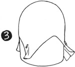Cut 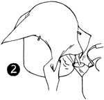a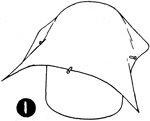 14" square of lining material and put on Utility Block. Pin back, front and sides to block. (Illus. 2) Hold block over steam pulling down points on either side of back and front until lining fits block, and is free from wrinkles. Pin lining to block each step as you stretch and steam (Illus. 3).
Let lining dry on block then remove and slip lining into crown. Pin and sew around, headsize, cutting off excess material. Finish headsize with a swirled headband ribbon.
LINING MADE FROM A PATTERN FOR SQUARE CROWNS
(Illus. 4)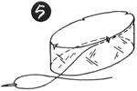 Cut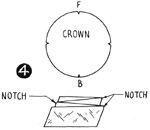 a circle of lining material to fit top of crown. Notch front, back and side of circle. Cut a bias strip of lining material the width of side crown and length of headsize measurement. Fold this strip of material into quarters, notch, join ends and sew together. (Illus. 5) Match notches on bias strip with notches on circle, baste together and stitch. Slip lining into crown, pin and baste around headsize. Cut off excess material and finish with a swirled headband ribbon.
HEADBAND RIBBONS
Saw-Tooth grosgrain ribbon No. 5 is used to finish the headsize of hats. This ribbon will retain its shape when blocked or swirled, which is very important. Allow 3/4 of a yard of ribbon for a hat, as ribbon shrinks some when swirled.
SWIRLED RIBBON HEADBAND
Dampen ribbon and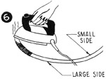 press into a circle, using a regular iron, (Illus. 6) if a steam iron is used, ribbon does not need dampening. Pin the large side of the ribbon circle to headsize, letting the small side of ribbon circle extend into headsize. Turn ribbon under and lap ends to finish ribbon headband.
BLOCKED RIBBON HEADBAND
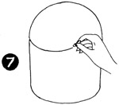(Illus. 7) Put hat on Utility Block and draw a line on block around headsize, then remove hat.
Wet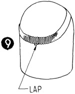 a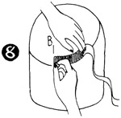 piece of headband ribbon. Starting in back on line drawn on block, pin (Illus. 8) (with push pins) one edge of ribbon, stretching and turning ribbon to fit block (Illus. 9).
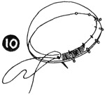When dry remove ribbon and pin into headsize of hat, and sew using invisible stitch (Illus. 10).
RIBBON HEADBAND FOR BERET
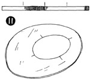Do not swirl headband ribbon for Berets. Ribbon headband must measure your exact headsize measurement after ends have been lapped and joined, before pinning ribbon into Beret head-size (Illus. 11).
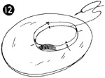Divide ribbon headband into quarters and mark, then divide beret headsize into quarters and mark, match marks on Beret headsize with marks on ribbon headband and pin and sew ribbon around Beret headsize (Illus. 12). If ribbon headband is larger than Beret headsize, stretch Beret headsize to fit ribbon, if ribbon headband is smaller than Beret headsize hold headsize in to fit ribbon.
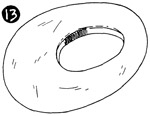After ribbon headband has been sewn flat around Beret head-size, dampen ribbon headband and turn ribbon headband up into Beret headsize (Illus. 13), then pull Beret over Utility block and let ribbon headband dry on block.
SEWING IN SWIRLED HEADBAND RIBBONS
When sewing in a headband on a Beret use an overcast stitch on edge of ribbon. For all other headbands use a small stitch in a rib of the ribbon on the outside and slant needle into hat headsize taking a long stitch on underside. Continue in this manner, a long and a short stitch until entire headband has been sewn around headsize.